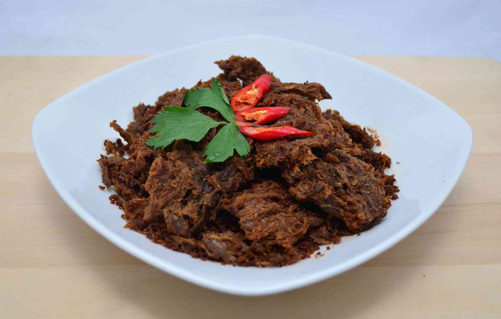

Resep Rendang Sapi

Bahan-Bahan:
- 4 sdm minyak kelapa
- 5 lembar daun jeruk
- 4 batang serei
- 5 lembar daun salam
- 2 lembar daun kunyit
- 1 batang kayu manis
- 4 polong kapulaga
- 2 butir cengkeh
- 2 buah bunga lawang
- 1 kg daging sapi
- 800 ml santan
- 1200 ml air kelapa
- 2 buah asam kandis
- 250 gr bawang merah
- 10 siung bawang putih
- 100 gr cabai merah
- 10 butir kemiri
- 2 inci jahe
- 2 inci lengkuas
- 2 inci kunyit
- 1 sdt ketumbar
- 1 sdt kinten
- 1 sdm lada
- 1 sdm garam
Langkah-Langkah:
- Langkah 1 :
- Panaskan minyak dalam wajan/panci besar di atas api sedang-tinggi dan goreng pasta bumbu, daun jeruk nipis, serai, daun salam Indonesia, batang kayu manis, polong kapulaga hancur, cengkeh, dan adas bintang sampai harum. Sekitar 3-5 menit.
- Langkah 2 :
- Tambahkan kubus daging sapi, aduk sampai tidak lagi berwarna merah muda. Tambahkan santan dan air/air kelapa, bersama dengan asam kandis/asam gelugur/kokum hitam/asam jawa. Aduk hingga tercampur rata, dan didihkan. Kurangi panas sedikit (masih di atas titik didih) dan biarkan wajan terbuka. Masak hingga cairan berkurang dan mengental.
- Langkah 3 :
- Setelah cairan mengental, kecilkan api dan didihkan sampai semua cairan hampir hilang dan daging sapi terlihat agak gelap. Juga, Anda akan melihat minyak terpisah dari bumbu. Angkat dari api dan sajikan panas atau pada suhu kamar.